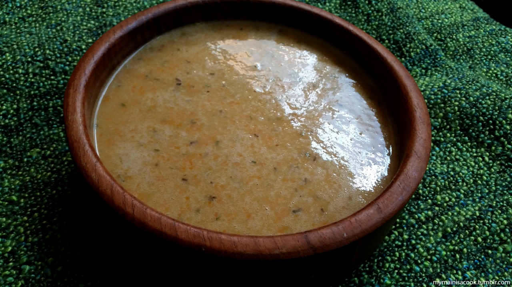

Potage le Magnifique - The Elder Scrolls V: Skyrim

Description
Potage le Magnifique is a dish from the video game 'The Elder Scrolls
V: Skyrim'. Within the game, the recipe is found in the book
'Uncommon Tastes' by The Gourmet. The recipe is The Gourmet's
signature dish. The recipe is short and simple but, according to
The Gourmet, magnificent. As per the postscript:
I have served bowls of the Potage le Magnifique that have
caused grown men to weep with joy. Can you guess what I added?
Can you create... magic?
The recipe is a simple soup. The soup uses both chicken and beef broth,
with only carrots and onions for texture. In the in-game era,
electricity has not yet been utilised by the citizens of Tamriel, and
so this dish is prepared over an open flame. Unlike other dishes in
the game, Potage le Magnifique does not require any fictional ingredients.
The dish can be made exactly as described in-game.
Ingredients
- 4 cups chicken broth
- 4 cups beef broth
- 2 1/5 ounces butter
- 1 wooden flagon of flour
- 1 cup diced carrots
- 1/2 cup diced onions
Steps
- Stoke the flames of your open-pit fire, and achieve a low heat
- Combine all ingredients into a large soup pot
- Stir vigorously!
- Once hot, pour into earthen soup bowls immediately!